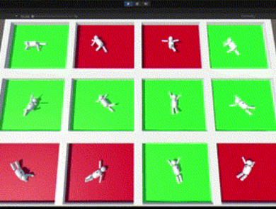
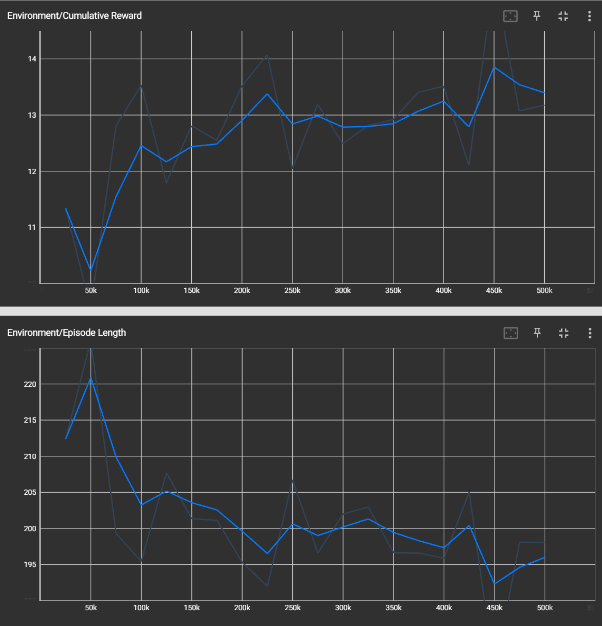

Brigham Young University
Provo, UT
November 2022
(Fall Semester)
Machine Learning, C#,
Unity Game Engine
Introduction and Objective
As part of a Neuromechanics of Movement course, I wanted to explore how human infants learn to roll over by training a reinforcement learning agent. This project involved creating a simplified model of a human infant that the agent could control. The goal was to emulate how infants learn through trial and error, akin to reinforcement learning, where feedback from the environment shapes behavior over time. This analogy highlights the parallels between biological learning processes and artificial intelligence, as both rely on gradual optimization of actions to achieve desired outcomes.

Methods and Technical Details
I developed the infant model and trained the reinforcement learning agent within the Unity game engine, leveraging the Unity ML-Agents Toolkit. This setup allowed Python-based deep reinforcement learning to interact with Unity as the environment. I scripted the agent’s actions, observations, and rewards in C#, providing four continuous action options for limb torque and two discrete actions for arm rotation axis selection. The agent made eight observations per step, tracking limb and torso rotations and chest marker height. Rewards were structured to encourage complete rollovers within a 30-second window, with partial rewards based on marker proximity to the floor when the timer elapsed.

Results and Evaluation
The agent successfully learned to roll over, achieving a primary project goal. Its movement patterns resembled human infant rolling, synchronizing limb movements to generate torso rotation. However, training stability was a challenge, likely due to control sensitivity in the limb scripts. In future work, I would improve consistency in movement by refining control responses and experimenting with algorithm configurations. Adjustments to the agent’s available actions and observations may further enhance training stability
